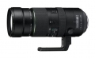
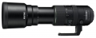

器材库 > 35mm画幅AF变焦镜头 > PENTAX-D FA 150-450/4.5-5.6ED DC AW

详细规格
镜头类型
超远摄变焦镜头
发布日期
2015-02-05
厂家推荐价格
320,000.00 （日元）
焦距
150mm-450mm
最大光圈
f/4.5-5.6
最小光圈
f/22-27
镜头结构
18片/14组
低/超低色散镜片
3片
光圈叶片
9片
最近对焦距离
200cm
最大放大倍率
0.22倍
滤镜口径
86mm
镜头卡口
Pentax AF
防抖
否
颜色
黑色
尺寸
95 x 241.5mm
重量
（带底座）2325g
该产品暂无存档的网友点评
产品图 / 样片
